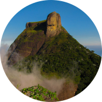
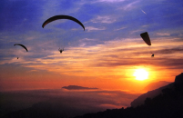
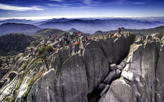
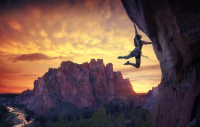

Próximos
Eventos

Pedra da Gávea
Dia: 09/04/2022 (Quarta-feira)
Nível: Difícil
Tempo estimado: 6 horas
Início da trilha: 9:00h
Encontro Final: Início da trilha
Valor: a partir de R$49,99

Praia do Perigoso
Dia: 09/05/2022 (Quarta-feira)
Nível: Moderado
Tempo estimado: 3 horas
Início da trilha: 9:00h
Encontro Final: Barra de Guaratiba
Valor: a partir de R$19,99
Nossa Comunidade
Nosso App conta com tracklogs de trilhas, posicionamento de GPS, Informações meteorológicas, além de muitas dicas sobre os principais pontos de aventura do Brasil. Somos amantes da Natureza e dos esportes radicais. Nosso objetivo aqui, é criar uma grande comunidade de aventureiros. Vamos compartilhar nossas experiências, fazer amigos e curtir muitas aventuras. Qual é o seu esporte ? Trekking, Escalada, Corrida, Caminhada, Vôo Livre ? Aqui é o nosso lugar!
Esportes

"Olhe para o lado e pássaros o seguem. O vento é viscoso e atravessa seu rosto, nariz, olhos e orelhas. Seus pés não tocam o chão, a natureza é vasta, o solo é recortado por quadrados, tudo está flutuando; sua mente, a natureza e Deus parecem uma coisa só. Sim, você está em voo livre!"
"O meu sonho para essa vida é que ela continue sendo exatamente da forma que ela é agora, quero continuar a encontrar a felicidade nos pequenos prazeres das coisas simples."


"Mas a verdade é que eu sempre brinquei muito de escalar quando criança, subia em árvore, telhado da casa, corredores, muros, sem nem imaginar que um dia isso poderia virar a minha vida."